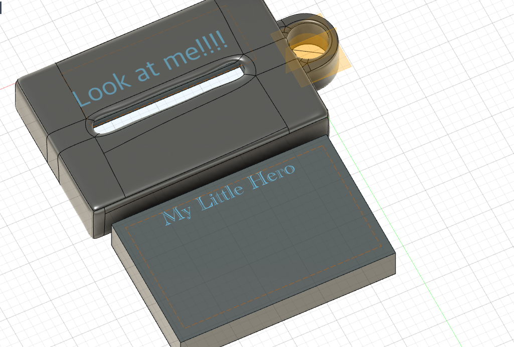

作品説明 Introduce to my works
ラストアサイントメント……私が作成した作品はポケットティッシュカバーです。
ポケットティッシュは携帯しやすい一方で、存在が目立たず忘れられがちです。
そんな小さなヒーローを目立たせたいという想いから、この作品を制作しました。

設計 Design
どう目立たせるかを考えたときに視点を変え、固定概念という名の殻をぶち破りました。
「ポケットから出せばいい。」そう思ったんです。そして、現在流行になっているカラビナに装着できるようにして
ファッションの一部にすれば目立てると考えました。
どう惹きつけるか How to attracted
ファッショの一部にするにはまず、誰かに見て選んでもらって使用してもらうプロセスが前提になります。
なので、カバーのデザインもイケメンまたは美女にする必要があります。
そして次に使用する場所です。私が考えている使用場所はズボンのベルト紐にカラビナと同時使用。またはバッグにあるチャックやカラビナに付けてもらう。
映像 Video & Images
Motion here does not entertain. It preserves silence.